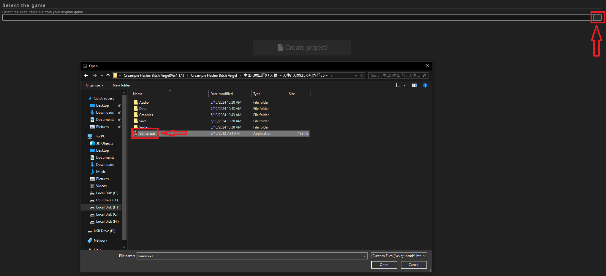
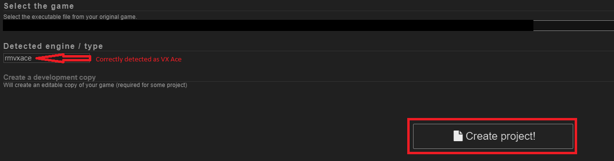
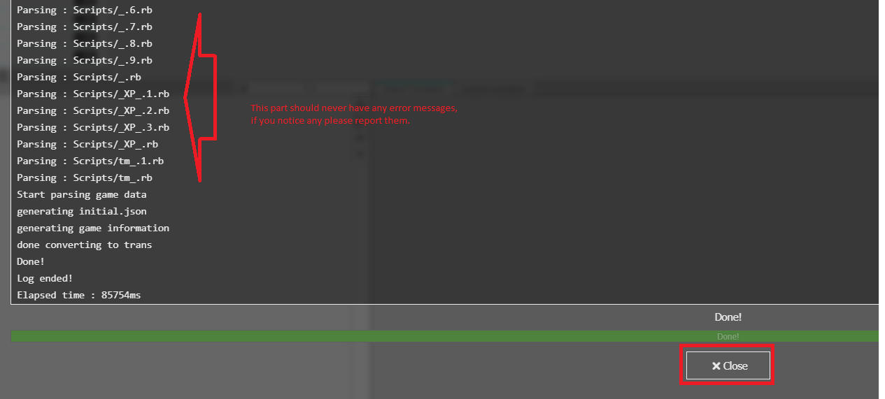
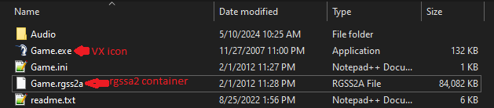
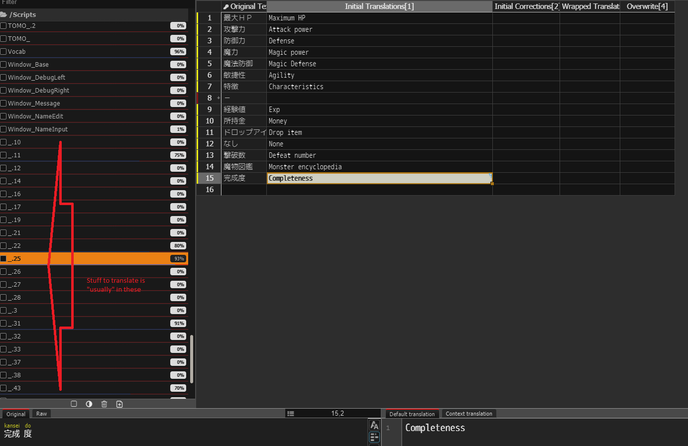
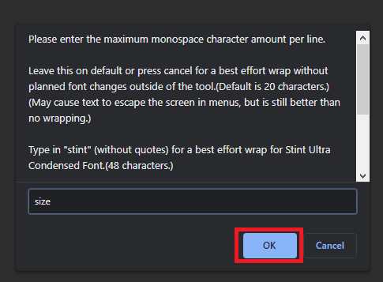

VX Ace is an RGSS3 game: the database and maps are Ruby-marshaled files in the Data folder (.rvdata2 extension), the scripts live inside Data/Scripts.rvdata2, and Game.ini names the RGSS3 runtime. SLR Translator converts this data with a bundled Ruby toolchain, so nothing needs to be installed. Start with Your First Translation Project for the general walkthrough.
RPG Maker XP, VX, Ace, MV & MZ Parser and select the game's executable. rmvxace is detected from Game.ini (see Engine Detection).Game.rgss3a archive, the wizard forces a development copy — the archive is decrypted into it automatically. See Encrypted & Packed Games.Create project!. The data files are unpacked into YAML, the scripts into readable Ruby files, and the project opens in the editor.
Select the RPG Maker parser entry in the wizard.

Pick the VX Ace game executable; rmvxace is detected automatically.

After creation: review any reported errors, then close the summary.

A VX Ace game folder — here with the data packed into Game.rgss3a.
Actors, Classes, Skills, Items, Weapons, Armors, Enemies, Troops, States, System, CommonEvents, MapInfos and every Map###): names, descriptions, messages, notes, and all event command lists — the same categories as the MV parser. Animations and Tilesets are skipped.Game.ini: the window title (which also names the project) and the other INI values.Projects for VX and VX Ace contain a virtual Scripts/!Main Injection object. Whatever Ruby code you type into its translation cell is inserted at the very start of the Main script whenever the scripts are exported or a translation is applied. The placeholder suggests the classic example:
Font.default_size = 16When the injected code sets Font.default_name to a font file (for example Font.default_name = "MyFont.ttf"), the matching file from SLR Translator's fonts collection folder — or the game's own Fonts folder — is copied into the export's Fonts folder automatically.

Reviewing the script sections of an RGSS project in the editor.
Press Export Project and choose Export to a folder or Export as a Zip file (see Exporting the translation). The Export Options dialog offers the tagged-rows filter and Word Wrap By Tag rules (export-time rules, distinct from the Automatic Word Wrapping button). On export, the translated data is written back: YAML is repacked into .rvdata2 files, the scripts are recompiled, and Game.ini is rewritten — the original game folder stays untouched.

Word wrap rules: pick the tags to wrap and the maximum line length.
Data/main.rvdata2 script container. It is extracted with the bundled TES patcher during parsing and rebuilt on export — see Encrypted & Packed Games..rvdata2 files; VX uses RGSS2 (.rvdata) and XP uses RGSS1 (.rxdata) — the translation workflow is identical for all three.